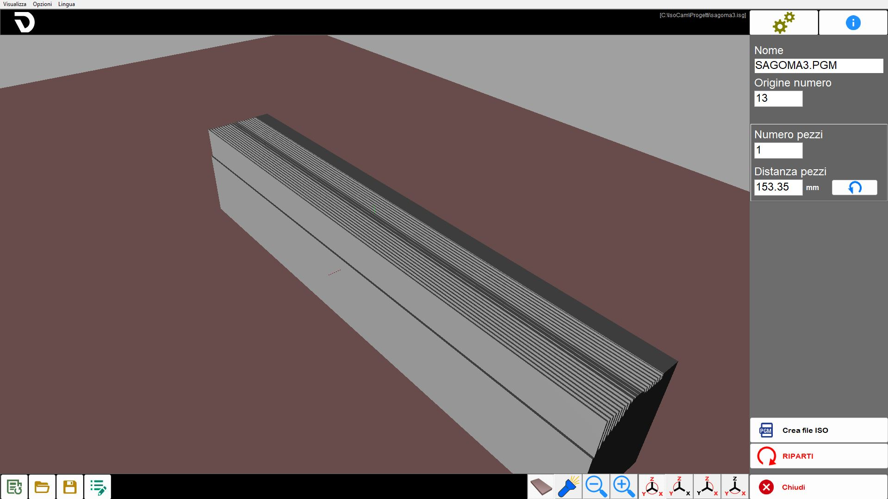
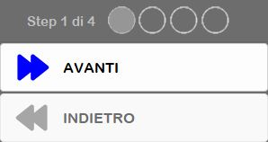
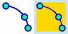
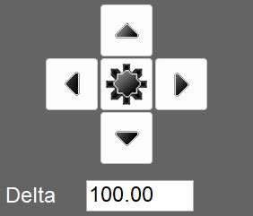
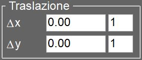
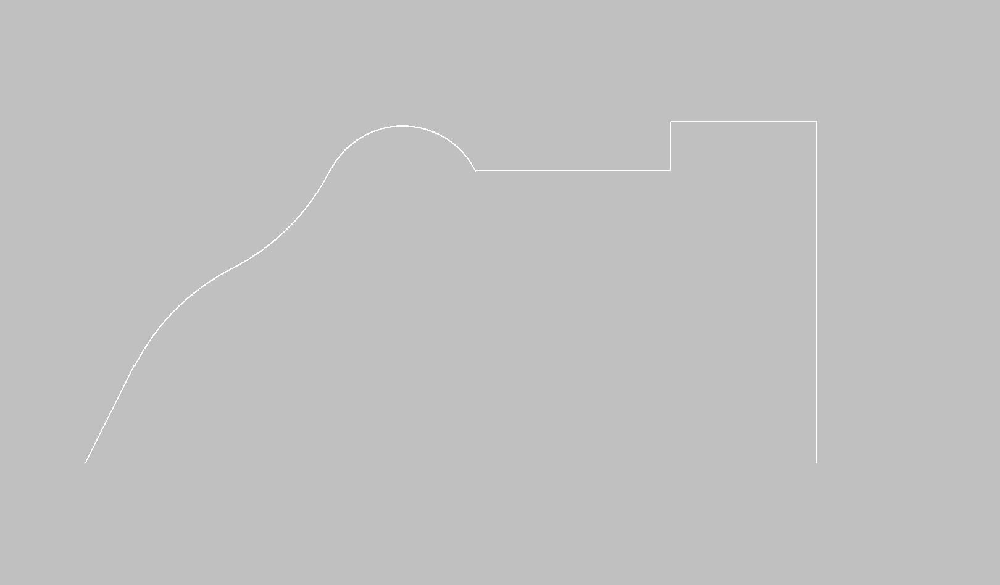
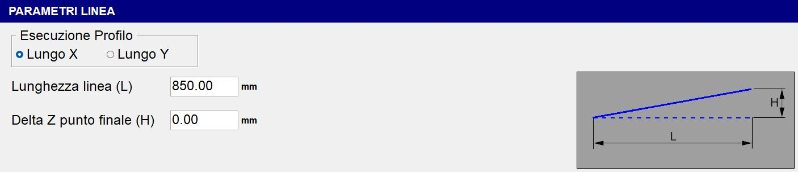
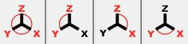
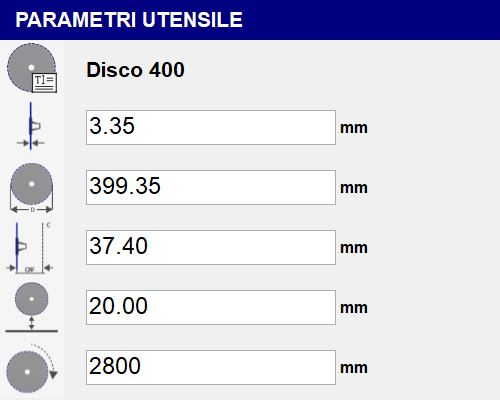
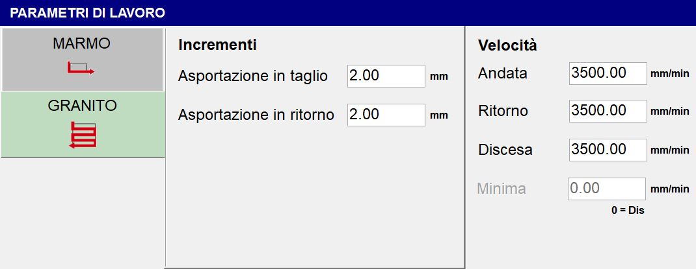

IsoCam è il software per l’esecuzione di sagomature con il disco; permette di disegnare o importare sagome, decidere il profilo e applicare diversi modi di lavorazione.
La gestione della programmazione del lavoro viene divisa in diverse fasi che verranno descritte nei seguenti paragrafi.
All’apertura del programma Isocam, se non è presente alcuna lavorazione precedentemente creata, l’operatore potrà crearne una nuova, dal primo passo di lavorazione.
Nel caso invece in cui sia presente una lavorazione precedentemente creata, questa verrà automaticamente caricata e l’operatore avrà accesso direttamente all’ultimo step della lavorazione:

Elementi in comune tra i vari step
L'interfaccia utente è composta da diverse aree.
Menù: utility rapide.
Barra superiore: funzioni specifiche della pagina attiva.
Parte centrale: contiene il disegno o l’area attiva in base alla pagina.
Barra laterale: finestra contenente i parametri da modificare.
Barra inferiore: pulsanti generalmente validi in diverse aree del software.
I seguenti elementi rimarranno sempre visibili, indipendentemente dalla fase corrente del processo.
Menù
La barra dei menù è collocata in alto, al di sopra di ogni altro elemento di questa interfaccia.
Visualizza | Vengono messe a disposizione dell’operatore alcune impostazioni relative alla visibilità dei pezzi presenti nell’area di lavoro. |
Opzioni | È possibile modificare impostazioni relative ai colori. |
Lingua | ISOCAM è attualmente disponibile nelle seguenti lingue:
|
Barra laterale destra
Impostazioni | |
 | Info |
 | Gestione Step |
 | Chiudi |
Impostazioni
Questo pannello permette di passare alla modalità Avanzata di IsoCam, di tornare alla versione base, e di modificare i valori di Passo Griglia in X e Y.

Barra inferiore
 | Nuova lavorazione |
 | Apri lavorazione |
 | Salva lavorazione |
 | Modifica lavorazione |
Disegno della sezione (step 1 di 4)
La prima fase della programmazione consiste nel disegno della sezione da lavorare. La finestra propone i comandi caratteristici di un software CAD: disegno linea, disegno arco, snap, sposta, ecc…
L’idea alla base del software è la creazione della sezione come veloce schizzo che verrà poi modificato, entità per entità, con gli appositi comandi. Rimane sempre attiva la possibilità di importare disegni .dxf generati da CAD esterni.

Barra superiore

 | Comando disegno Linea |
 | Comando disegno arco |
 | Muove i tratti selezionati |
 | Figura Speculare |
 | Raccorda |
 | Inversione della selezione attiva |
Elimina tratti selezionati |
Barra laterale destra
Proprietà linea
Selezionando una linea nell’area di lavoro, la colonna laterale destra viene aggiornata per mostrare le caratteristiche dell’entità selezionata, che possono essere modificate dall’utente:
Lunghezza | Indica la distanza lineare tra i due estremi della linea selezionata, calcolata in base alle coordinate nello spazio di lavoro. |
Angolo | Indica l’orientamento della linea rispetto all’asse orizzontale del sistema di riferimento. |
Δx | Indica la variazione della coordinata X tra il punto iniziale e quello finale di una linea o entità, ovvero la distanza orizzontale percorsa rispetto all’asse X del sistema di riferimento. |
Δy | Indica la variazione della coordinata Y tra il punto iniziale e quello finale di una linea o entità, ovvero la distanza verticale percorsa rispetto all’asse Y del sistema di riferimento. |
Allunga/Accorcia linea selezionata | |
 | Approssima Angolo |
Scala tratti connessi | Consente di applicare una scalatura proporzionale a tutte le entità direttamente o indirettamente collegate alla linea selezionata. |
Proprietà arco
Selezionando un arco nell’area di lavoro, la colonna laterale destra viene aggiornata per mostrare le caratteristiche dell’entità selezionata, che possono essere modificate dall’utente.
L’arco può essere definito in diversi modi: per punti, come centro, raggio e arco , ecc…
Le varie caratteristiche vengono mostrate nella finestra che appare sulla destra.
La variazione di alcune caratteristiche può essere soddisfatta in diversi modi, ad esempio cambiando il raggio o il punto iniziale/finale; per discriminare il modo di modifica è presente il flag “Centro fisso”.
Raggio | Indica la distanza costante tra il centro di una curva circolare o di un arco e qualsiasi punto lungo la sua circonferenza. |
Angolo iniziale/finale | Angolo del punto iniziale o finale rispetto al centro. |
Tangente Prec. / Succ. | Modifica l’angolo iniziale o finale in modo che l’arco risulti tangente all’entità precedente o successiva. |
Centro fisso | Permette di decidere le conseguenze di una modifica (raggio o angolo). |
Sposta / Muovi selezione
All’abilitazione del comando “sposta” appare la finestra con i parametri per la movimentazione. La movimentazione può essere fatta direttamente tramite click sull’area di disegno (anche con gli snap attivi) o tramite impostazione dei parametri.
La conferma dello spostamento deve essere data con il pulsante “OK”.
 | Selettore posizione |
 | Traslazione |
Muovi copia | Se abilitata, la funzione crea una copia dell’entità selezionata e applica lo spostamento solo a questa copia, lasciando invariata l’entità originale. |
Specchia
Dopo aver abilitato il comando è necessario impostare il centro di simmetria tramite click sull’area di lavoro o impostando le quote, selezionare la direzione dello specchia e premere il pulsante “OK” per confermare.
Centro di simmetria | Consente di modificare le coordinate del centro di simmetria utilizzato per il ribaltamento orizzontale o verticale dell’entità selezionata. |
Coordinate da invertire | Indica se eseguire il ribaltamento in orizzontale, in verticale oppure in entrambe le direzioni. |
Specchia copia | Se attivata, l’operazione di specchiatura viene eseguita creando una copia specchiata dell’entità selezionata, mantenendo intatta l’originale. |
Raccorda
Un primo messaggio, visualizzato nella colonna di destra, consente all’operatore di impostare il raggio del raccordo e confermare la selezione.

Un secondo messaggio informa l’operatore che è ora possibile inserire raccordi tra due linee, operazione disponibile fino alla disattivazione della funzionalità.

Di seguito l’esempio di applicazione di raccordi su due linee adiacenti e una linea adiacente a un arco:

Dopo l’applicazione dei raccordi:

Barra inferiore
 | Importa file DXF |
 | Esporta file DXF |
 | Annulla modifica |
 | Snap inizio/fine |
 | Comando Orto |
 | Comando Tratti connessi |
 | Griglia di disegno |
 | Undo Zoom |
 | Seleziona selezione per Zoom |
 | Ripristina Zoom |
Selezione profilo (step 2 di 4)
La sezione precedentemente disegnata deve essere applicata su un opportuno profilo.
Il profilo può essere lineare o ad arco, nel piano X/Y o anche verticale; in base alla selezione verranno poi abilitate o disabilitate alcune modalità di lavoro. Così, ad esempio, un profilo ad arco nel piano XY può essere lavorato solo con disco verticale e viceversa per un profilo ad arco nel piano XZ o YZ.
La tipologia di profilo viene scelta con i pulsanti sulla sinistra, al centro in alto vengono mostrati i parametri per descrivere geometricamente il profilo e nella parte centrale in basso viene mostrata l’anteprima del risultato.

Parte centrale
Profilo Lineare | Si imposta la direzione e la lunghezza. |
Profilo ad arco | Si definiscono: direzione, piano di lavoro, concavità e le caratteristiche geometriche. |
Profilo a cerchio | Verrà lavorato solo esternamente con disco orizzontale. |
Parametri profilo Lineare

Esecuzione Profilo | Sono disponibili due modalità: “Lungo X” e “Lungo Y”. |
Lunghezza linea (L) | Lunghezza orizzontale della base del tratto inclinato, misurata tra il punto di partenza e il punto finale proiettato orizzontalmente. |
Delta Z punto finale (H) | Altezza del tratto inclinato, ovvero la differenza di quota tra l’inizio e la fine del segmento. |
Parametri profilo Arco

Esecuzione Profilo | Scelta tra “Lungo X“ oppure “Lungo Y“. |
Orientamento lavorazione | Scelta tra “Piano XZ“ oppure “Piano XY“. |
Tipo di lavorazione | Scelta tra “Concavo“ oppure “Convesso“. |
Lunghezza (L) | Distanza orizzontale tra i due estremi dell’arco, ovvero la corda che collega l’inizio e la fine dell’arco. |
Raggio di partenza (R) | Distanza dal centro dell’arco al punto dell’arco stesso. Determina la curvatura complessiva dell’arco. |
Sviluppo in verticale (H) | Altezza massima dell’arco rispetto alla corda L; rappresenta la distanza verticale tra il punto più alto dell’arco e la corda. |
Ampiezza angolo (A) | Angolo al centro sotteso dall’arco, espresso in gradi. |
La modifica di uno dei seguenti valori: “Lunghezza”, “Raggio di partenza”, “Sviluppo in verticale” o “Ampiezza dell’angolo”, comporta il ricalcolo automatico dei parametri rimanenti.
Parametri profilo Cerchio

Raggio di partenza (R) | Determina il raggio dal punto di partenza. |
Custodia | Questo flag indica se nella fase di lavoro l’asse C ruota (custodia attiva) o rimane fermo con C=0_ (custodia non presente). |
Barra inferiore
 | Vista tavola |
 | Luci aggiuntive |
 | Gestione delle viste di default |
Parametri di lavoro (step 3 di 4)
La pagina è divisa in riquadri con diversi tipi di dati da impostare per la lavorazione

Parametri utensile
L’operatore può definire i parametri dell’utensile:

Se si tratta di un nuovo progetto i dati vengono caricati automaticamente in base all’utensile fisicamente installato; se si tratta invece di una lavorazione precedentemente salvata, i dati dell’utensile saranno quelli già salvati nel programma precedente.
Nome utensile | |
 | Spessore |
 | Diametro |
 | CRF (Centro Rotazione Flangia) |
 | Quota di sicurezza |
 | RPM (Giri Al Minuto) |
Orientamento lavorazione

Profilo Lineare
Per profili lineari c’è la possibilità di scegliere se eseguire la lavorazione con disco in verticale o con disco in orizzontale (da fronte o da sinistra).
Orientamento Verticale | Orientamento Orizzontale |
 |  |
Profilo Arcato
Per profili curvilinei l’orientamento è vincolato dal tipo di profilo:
Tipo di lavorazione | Orientamento Verticale | Orientamento Orizzontale |
Concava |  |  |
Convessa |  |  |
Tipo di lavorazione

La lavorazione può essere eseguita in due modalità:
 | Modalità per tagli |
 | Modalità spatolato |
Configurazione Per tagli
Verranno eseguiti tagli paralleli fra loro che seguono il profilo selezionato ad una distanza fra i tagli presa da parametro.

Passo | Indica la distanza fra la posizione di un taglio e di quello adiacente. Se superiore allo spessore del disco rimarrà del materiale fra le passate. |
Allungo inizio / fine | Permette di allungare un taglio nella parte iniziale / finale del valore impostato. |
Più Auto | L’abilitazione del flag comporta un incremento automatico del valore di allungo, sulla base di un valore stabilito dal sistema. |
Sovramateriale | Spessore del materiale da lasciare sopra la sezione finale desiderata. |
Direzione tagli | La direzione del taglio può avvenire da destra verso sinistra oppure da sinistra verso destra, a seconda della configurazione selezionata. |
Configurazione Spatolato
Il movimento sarà trasversale alla direzione del profilo, viene utilizzata per una finitura superficiale del pezzo.

Passo di spatolamento | Indica la distanza tra un movimento trasversale e il successivo lungo la direzione del profilo. |
|---|
Velocità e modo di taglio
In base alle selezioni precedenti appaiono diversi menù per la selezione dei parametri necessari a definire la lavorazione.

Se il tipo di lavorazione selezionata è la Configurazione per Tagli, saranno disponibili due tipologie di parametri di lavoro:
 | Modalità Marmo |
 | Modalità Granito |
Modalità Marmo
Parametri generali:
Tagli nei due sensi (finitura) | Questo flag permette di impostare una velocità di ritorno diversa dalla velocità di andata. |
Non alzare mai (finitura) |
Parametri di velocità:
Andata | La velocità di esecuzione di andata della passata. |
Ritorno | La velocità di esecuzione di ritorno della passata. |
Penetrazione | La velocità di esecuzione di penetrazione della passata. |
Minima | Impostando un valore diverso da zero la velocità di taglio dipenderà dalla profondità del taglio stesso, si avrà quindi un movimento a velocità di andata per tagli a profondità nulla e a velocità minima quando il taglio è alla massima profondità per la sezione selezionata. |
Modalità Granito

Parametri generali:
Asportazione in taglio | Quantità di materiale che viene asportata nella passata di andata. |
Asportazione in ritorno | Quantità di materiale che viene asportata nella passata di ritorno. |
Se il tipo di lavorazione selezionata è la Configurazione Spatolato, sarà disponibile un unico parametro di lavoro:
Velocità - Lavorazione | Imposta la velocità con cui il tipo di lavorazione spatolato verrà eseguita. |
|---|
Parametri di lavorazione (avanzato)
 | Parametri di lavorazione (avanzato) |
In questa schermata è possibile verificare e modificare diversi parametri, molti dei quali sono stati impostati negli step 2 e 3.

La prima operazione consiste nella selezione del tipo di profilo da utilizzare:
 | Lineare |
 | Arcato |
E successivamente i seguenti parametri:
Lavorazione | Può essere per tagli o spatolato. |
Orientamento lavorazione | La lavorazione può essere eseguita in verticale oppure in orizzontale. |
Esecuzione profilo lungo | Lungo X oppure Y. |
Dati di Lavorazione
Per il profilo Lineare è possibile impostare i seguenti parametri:
Spessore del materiale | Definisce la misura dello spessore del materiale (in mm) |
Inclinazione del profilo (mm) | Permette di definire l’inclinazione del profilo indicando la differenza di altezza tra il punto finale ed il punto iniziale. |
Per il profilo Arcato sono messi a disposizione i parametri impostabili nei passi precedenti.
Entrambi i profili hanno inoltre i seguenti dati di lavorazione in comune:
Passo | Fisso in Y: mantiene la distanza fissa fra i tagli indipendentemente dalla sezione sottostante |
Direzione tagli | Scelta tra “Y_“ oppure “Y-“. |
Lavorazione completa del profilo | Permette di scegliere se eseguire o meno la lavorazione completa del profilo. |
Forza tagli su angoli | Aggiunge tagli nei punti di variazione di pendenza. |
Togli sovrapposti | Se questo flag è abilitato e il valore “Passo“ è maggiore del valore “Spessore“, verranno eliminati i tagli sovrapposti. |
Passo ottimizzato (tintura) % Sorm. | Se il valore “Passo“ è minore del valore “Spessore“, il passo sarà ottimizzato sulle linee orizzontali. |
Esegui taglio all’inizio | Permette di scegliere se eseguire o meno un taglio all’inizio del profilo. Tramite la casella a fianco è possibile impostare la profondità di questo taglio. |
Esegui taglio alla fine | Permette di scegliere se eseguire o meno un taglio alla fine del profilo. Tramite la casella a fianco è possibile impostare la profondità di questo taglio. |
Dati Utensile
Sono qui riportati alcuni dati precedentemente impostati e altri parametri specifici per l’utensile.

Descrizione utensile | Una rapida descrizione dell’utensile |
 | Magazzino utensili |
N_ Posizione | Indica il numero della posizione all’interno del magazzino dell’utensile selezionato. |
N_ Correttore | Indica il numero che identifica il nome dell’utensile selezionato. |
Spessore anima disco (SA) | Spessore del corpo portante centrale del disco. |
Forma dente | L’operatore potrà scegliere una tra tre forma del dente:
|
 | Scelta materiale
|
Priorità | È possibile stabilire un valore di priorità (rigorosamente positivo). |
Profondità | Indica la profondità del taglio utensile. |
Lavorazione (step 4 di 4)
In base alle selezioni precedenti viene visualizzata un’anteprima dei tagli calcolati. La pagina è divisa in diverse aree con i comandi per gestire le modifiche.

Una volta verificati i tagli o effettuate le modifiche desiderate premere sul pulsante “AVANTI” per aprire la pagina per generare il programma di taglio.
Menù
Nel quarto step viene resa visibile un’ulteriore voce nel menù superiore:
Tagli | Questo menù offre all’operatore alcune rapide impostazioni per i tagli generati. |
|---|
Barra superiore
 | Generazione tagli |
 | Modifica la posizione del taglio |
 | Aggiunge un taglio di testa per separazione dei pezzi |
 | Aggiunge un taglio di coda per separazione dei pezzi |
 | Aggiunge un taglio nella posizione del mouse (Ins) |
Elimina il taglio selezionato | |
Elimina i tagli precedenti al taglio selezionato | |
 | Elimina i tagli successivi al taglio selezionato |
 | Simulazione tagli |
Parte centrale
Barra laterale destra
Nel quarto step questa barra contiene le seguenti informazioni:
 | Progressivo taglio |
 | Dati Generali |
 | Dati Tagli |
Barra inferiore
 | Opzioni sul taglio |
  | Sposta/allunga tagli |
 | Shift |
Creazione programma
Al completamento della preparazione nel quarto step, è possibile accedere alla fase finale, che include la visualizzazione del risultato ottenuto e la generazione del file ISO.
Nella parte centrale viene mostrato il 3D della lavorazione generata tenendo in considerazione il modo di lavoro. Cliccando nell’area è possibile ruotare la vista e gestire lo zoom.

Procedura base
Passo 1
Per iniziare, premere il pulsante "Nuova lavorazione". Assicurarsi che la funzione "Tratti connessi" sia attiva, quindi attivare il comando "linea". Procedere con una serie di clic sull’area di lavoro per disegnare la sezione desiderata. Una volta completato il disegno, fare nuovamente clic sul comando "linea" per disattivarlo. A questo punto, selezionare ogni entità individualmente per verificarne e, se necessario, modificarne i parametri.
Passo 2
In questo passo l’operatore può impostare alcune generalità basilari legate al tipo di lavorazione ricercata.
Passo 3
A questo punto è possibile impostare parametri relativi all’utensile, al tipo, orientamento e parametri della lavorazione selezionata.
Nel pannello “Parametri di lavorazione (avanzato)“ inoltre è possibile avere una panoramica di tutti i parametri impostati fino a questo momento.
Passo 4
Viene automaticamente generata una lista di tagli per la lavorazione corrente. È possibile inserire, modificare e rimuovere tagli in relazione alle esigenze operative.
Generazione ISO
Il passo finale della lavorazione permette all’operatore di creare un file ISO dalla lavorazione ottenuta oppure di ricominciare la procedura.